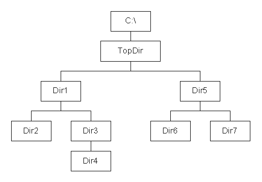

|
| |
CDirScanSetScanDataL()
Taking the above directory structure, if SetScanData() is called as follows:
_LIT(KDirText,"C:\\TopDir\\");
...
SetScanDataL(KDirText,KEntryAttDir,ESortByName|EAscending,CDirScan::EScanDownTree);
...
then the directories are scanned, by repeatedly calling CDirScan::NextL() in the following order: TopDir, Dir1, Dir2, Dir3, Dir4, Dir5, Dir6, Dir7. The sort key of EAscending means that multiple directories within the same parent directory are scanned in ascending alphabetic or numeric order.
If the scan direction is upwards, i.e.CDirScan::EScanUpTree, the directories are scanned in the order: Dir2, Dir4, Dir3, Dir1, Dir6, Dir7, Dir5, TopDir.
|
FullPath()If the full path of the entry currently being scanned is:
C:\Topdir\Middledir\Bottomdir\
and the top level directory in the scan as passed to SetScanDataL() is:
C:\Topdir\
then:
AbbreviatedPath() returns \Middledir\
FullPath() returns C:\Topdir\Middledir\.
Copyright ©2002 Symbian Ltd. 6.1-00174 |
|